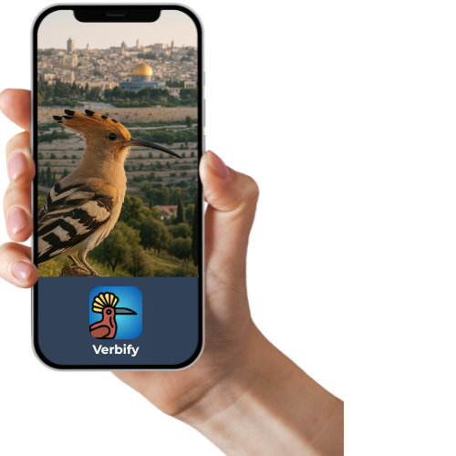

VERBIFY App
is your Hebrew Verb Trainer
is your Hebrew Verb Trainer

Suitable for beginners and intermediate learners
Includes 8 interactive exercises
AI assistant for grammar, translation, conjugation
Stores name, progress, and statistics only on the device
Simple and intuitive interface
Supports 7 languages
Works offline (except chatbot)
All infinitives, conjugations and imperatives with audio
Daily practice reminders
Easy way to share your progress
Подходит для начинающих и продолжающих
Содержит 8 интерактивных упражнений
Интегрированный ИИ-чатбот для помощи, объяснений, перевода и спряжения
Сохраняет имя, прогресс и статистику только на устройстве
Простой и интуитивный интерфейс
Поддержка 7 языков
Работает офлайн (кроме чатбота)
Озвучены все инфинитивы, спряжения и повелительные формы
Ежедневные напоминания о практике
Удобный способ делиться достижениями
Convient aux débutants et aux apprenants intermédiaires
Comprend 8 exercices interactifs
Chatbot IA intégré pour l’aide, les explications, les traductions et les conjugaisons
Enregistre le nom, la progression et les statistiques uniquement sur l’appareil
Interface simple et intuitive
Prise en charge de 7 langues
Fonctionne hors ligne (sauf le chatbot)
Tous les infinitifs, conjugaisons et impératifs avec audio
Rappels quotidiens pour pratiquer
Partage facile de vos progrès
Apta para principiantes y estudiantes intermedios
Incluye 8 ejercicios interactivos
Chatbot con IA incorporado para ayuda, explicaciones, traducción y conjugación
Guarda el nombre, el progreso y las estadísticas solo en el dispositivo
Diseño simple e intuitivo
Soporte para 7 idiomas
Funciona sin conexión (excepto el chatbot)
Todos los infinitivos, conjugaciones e imperativos con audio
Recordatorios diarios para practicar
Fácil forma de compartir tus logros
Indicado para iniciantes e aprendizes intermediários
Inclui 8 exercícios interativos
Chatbot com IA integrado para ajuda, explicações, tradução e conjugação
Armazena o nome, o progresso e as estatísticas apenas no dispositivo
Design simples e intuitivo
Suporte para 7 idiomas
Funciona offline (exceto o chatbot)
Todos os infinitivos, conjugações e imperativos com áudio
Lembretes diários de prática
Forma fácil de compartilhar suas conquistas
مناسب للمبتدئين والمتعلمين المتوسطين
يحتوي على 8 تمارين تفاعلية
روبوت دردشة ذكي مدمج للمساعدة، الشرح، الترجمة والتصريف
يحفظ الاسم والتقدم والإحصائيات فقط على الجهاز
تصميم بسيط وسهل الاستخدام
دعم لـ 7 لغات
يعمل بدون إنترنت (باستثناء روبوت الدردشة)
جميع الأفعال المصدرية والتصريفات والأوامر بصوت
تذكيرات يومية للممارسة
طريقة سهلة لمشاركة إنجازاتك
ለጀማሪዎችና ለአካባቢ ተማሪዎች ተስማሚ
8 ተዋዋይ ልምድ ማተሚያዎችን ይዟል
የአይኤ ቻትቦት ለእርዳታ፣ ለመረጃ፣ ለትርጉምና ለግስ መለያየት
ስም፣ ግምገማ እና ስታቲስቲክስ በመሣሪያው ላይ ብቻ ይቀመጣል
ቀላልና አስተዋይ ንድፍ
7 ቋንቋዎችን ይደግፋል
ኦፍላይን ይሰራል (ከቻትቦት በስተቀር)
ሁሉም ግሶች ከድምፅ ጋር ናቸው
ዕለታዊ የልምድ አስታዋሽዎች
ማሳያዎችን በቀላሉ ማጋራት
מתאימה למתחילים ולמתקדמים
כוללת 8 תרגולים אינטראקטיביים
צ'אטבוט בינה מלאכותית להדרכה, הסברים, תרגום והטיות
שומרת שם, התקדמות וסטטיסטיקה רק על המכשיר
ממשק פשוט ואינטואיטיבי
תמיכה ב־7 שפות
פועלת גם ללא חיבור לרשת (למעט הצ'אטבוט)
כל הפעלים, ההטיות והציווי כוללים שמע
תזכורות לתרגול יומי
שיתוף הישגים בקלות
Main exercises — conjugation trainers for over 100 verbs
For beginners: exercises to memorize 350 common verbs
For intermediate: trainers for recognizing binyanim and imperatives
Основные упражнения — тренажёры спряжения более 100 глаголов
Для начинающих: упражнения на запоминание 350 часто используемых глаголов
Для продолжающих: тренажёры распознавания биньянов и повелительных форм
Exercices principaux — conjugaison de plus de 100 verbes
Pour débutants : mémorisation de 350 verbes courants
Pour intermédiaires : entraînement aux binyanim et à l’impératif
Ejercicios principales — conjugación de más de 100 verbos
Para principiantes: ejercicios para memorizar 350 verbos comunes
Para intermedios: práctica de binyanim y formas imperativas
Exercícios principais — conjugação de mais de 100 verbos
Para iniciantes: memorização de 350 verbos comuns
Para intermediários: treino de binyanim e formas imperativas
التمارين الرئيسية — تصريف أكثر من 100 فعل
للمبتدئين: تمارين لحفظ 350 فعل شائع
للمتوسطين: تدريب على البنيان وصيغة الأمر
ዋና ልምዶች — ከ100 በላይ ግሶችን ለመሰረዝ
ለጀማሪዎች፡ 350 የተለመዱ ግሶችን ማስታወሻ
ለመካከለኛዎች፡ ቢንያንን እና ትእዛዛትን ማወቅ
תרגולים עיקריים — תרגול הטיית יותר מ־100 פעלים
למתחילים: תרגילים לזכירת 350 פעלים שכיחים
למתקדמים: תרגול זיהוי בניינים וציווי
The perfect Hebrew assistant — an integrated AI chatbot that knows everything about verbs and grammar
You can save answers and view them later — a convenient archive helps you quickly find what you need
Идеальный помощник по ивриту — встроенный ИИ-чатбот, который знает всё о глаголах и грамматике
Ответы можно сохранять и просматривать позже — удобный архив помогает быстро найти нужное
Votre assistant parfait pour l’hébreu — un chatbot IA intégré qui connaît tout sur les verbes et la grammaire
Les réponses peuvent être enregistrées et consultées plus tard — un archivage pratique pour retrouver facilement ce qu’il vous faut
El asistente perfecto para el hebreo: un chatbot con IA que lo sabe todo sobre verbos y gramática
Puedes guardar las respuestas y verlas más tarde — un archivo útil que te ayuda a encontrar lo que necesitas
O assistente ideal para hebraico — um chatbot com IA integrado que sabe tudo sobre verbos e gramática
Você pode salvar respostas e visualizá-las depois — um arquivo prático que ajuda a encontrar rapidamente o que precisa
المساعد المثالي للعبرية — روبوت دردشة ذكي مدمج يعرف كل شيء عن الأفعال والقواعد
يمكنك حفظ الإجابات ومراجعتها لاحقًا — أرشيف عملي يساعدك في العثور بسرعة على ما تحتاجه
የብሔራዊ ቋንቋው ብልጥ እገዳ — ሁሉንም ስለ ግሶችና ስርዓት የሚያውቅ የአይኤ ቻትቦት
መልሶችን መቀመጥና በኋላ ማየት ይቻላል — የተሻለ አርክብ እንዲሁም የሚፈልጉትን ፈጥነው ማግኘት ይረዳዎታል
העוזר המושלם ללימוד עברית — צ’אטבוט בינה מלאכותית שמבין הכול על פעלים ודקדוק
אפשר לשמור תשובות ולחזור אליהן מאוחר יותר — ארכיון נוח שמקל על מציאת המידע